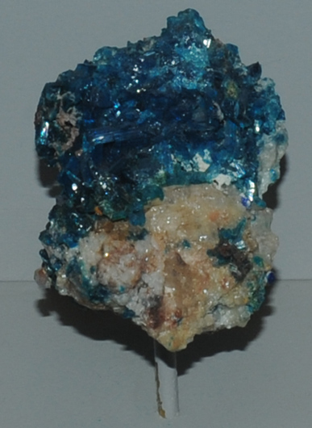

|

| Cu2Pb5(SO4)3(CO3)(OH)6
This sample of caledonite is displayed in the Smithsonian Museum of Natural History. Caledonite contains copper and lead with the composition Cu2Pb5(SO4)3(CO3)(OH)6. The sample at left is about 5 cm across and is from Mammoth mine, Tiger, Arizona. It is described as caledonite with anglesite.
|